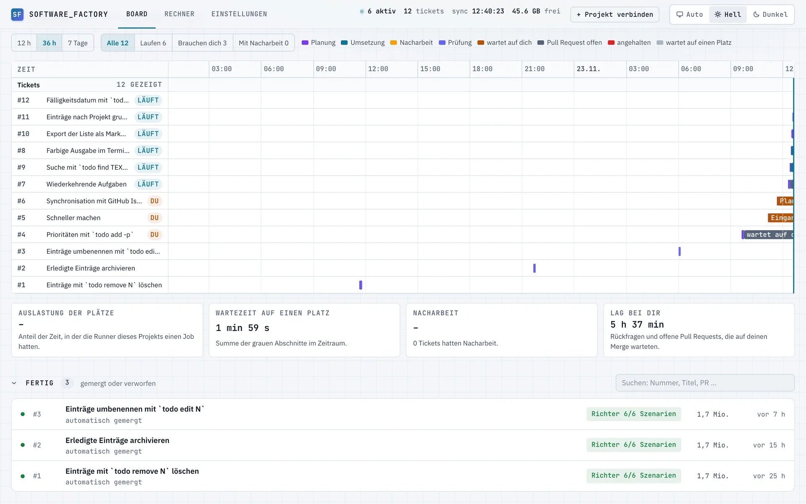

Ein Skript steuert
Reihenfolge, Runden, Budget und Parallelität entscheidet pipeline.py, kein Agent. Das ist testbar, und ein Limit hält zuverlässig an.
Issue rein, Pull Request raus. Dazwischen planen, bauen und prüfen Claude-Agents den Code am Fließband, und ein getrennter Richter testet ihn gegen Szenarien, die der Implementierer nie gesehen hat.
Open Source · MIT
Jede Station sieht nur die Dateien ihrer Vorgänger. Ein normales Python-Skript führt sie in fester Reihenfolge aus, zählt Runden und Budget und hält an einem Limit an. Ein Klick auf eine Station zeigt, was sie liest und schreibt.
Reihenfolge, Runden, Budget und Parallelität entscheidet pipeline.py, kein Agent. Das ist testbar, und ein Limit hält zuverlässig an.
Szenarien liegen in einem eigenen Repo. Der Richter gibt nur Wert und Fehlerbild heraus, nie den Szenario-Text. Auf den Test hin bauen geht nicht.
Unabhängige Tasks laufen gleichzeitig, jeder in einem eigenen Git-Worktree. Das Skript führt ihre Commits zusammen; Checks und Richter prüfen das Ganze.
Agents und Checks bekommen keinen GitHub-Token. Änderungen an .github/ und .factory/ werden vor jedem Commit verworfen.
Ein lokales Board zeigt alle Projekte live: was läuft, was dich braucht und was fertig ist. Vier Ansichten für dasselbe Band, hell oder dunkel. Alle Bilder hier sind echte Aufnahmen des Boards.





Im Dark-Modus sind Plan-Prüfung, Review und Richter Tore, und die Factory mergt einen Pull Request selbst, wenn alle Regeln erfüllt sind. Ohne Dark-Modus wartet er auf dich. Du schaltest ihn je Projekt ein.
factory:go an einem Issue startet das Ticket./approve im Issue, oder mit einem Änderungswunsch.

gh, angemeldetclaude setup-tokenIm Board „+ Projekt verbinden“ wählen. Die Seite legt Labels, Workflow und Profil per Pull Request in deinem Repo an.
# holen und starten $ git clone https://github.com/HanSur94/software-factory.git $ cd software-factory $ pip install -r requirements.txt $ python3 -m factory board Board läuft auf http://127.0.0.1:8787 # oder ein Ticket ganz lokal, ohne GitHub $ python3 -m factory local --repo ../mein-projekt \ --issue 1 --issue-file ticket.md --budget 5
Die Software Factory ist freie Software unter MIT. Fehler, Ideen und Pull Requests sind willkommen.